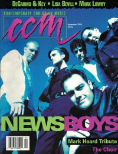

CMnexus
: Contemporary Christian culture, music, and media.
|
CCMSep 1994, vol. 17, iss. 3
| Cover |
|---|
|  | | Writers in this Issue |
|---|
Brown, Bruce A.
Callaway, Chris
Chatman, Todd
DeGarmo, Eddie
English, Erica
Ferraiuolo, Perucci
Fischer, John
Friebel, Melanie
Granger, Thom
Hefner, April
Key, Dana
Miskowski, Rhonda
Newcomb, Brian Quincy
Price, Deborah Evans
Rumburg, Gregory J.
|
Cover Feature:
- "More Than A Show" by Gregory J. Rumburg
Article:
- "Sunshine & Joy" by Melanie Friebel
- "A ReMARKable 'Face In This World'" by Deborah Evans Price
- "Tries Its Wings Again" by Thom Granger
- "Remembering Mark Heard" by Brian Quincy Newcomb
- "DeGarmo and Key Face To Face"
Christian Musician:
- "Piano Provides 'Key' To The Spirit" by Bruce A. Brown
In The News:
- "World Vision Offers Aid To Rwanda: Sandi Patti Acts as National Spokesperson" by Gregory J. Rumburg
Faces to Watch:What's New:In Concert:
- "Creation Festival" by Thom Granger
John Fischer:
- "Fame Is No Blessing" by John Fischer
|
|